Para mães e pais de crianças do 2º ao 5º ano
21 dias de jogos e folhas curtas para praticar a tabuada em casa, numa ordem que deixa cada tabuada mais fácil que a anterior. Com roteiro para os pais: o que falar, o que evitar e o que fazer quando a criança trava.
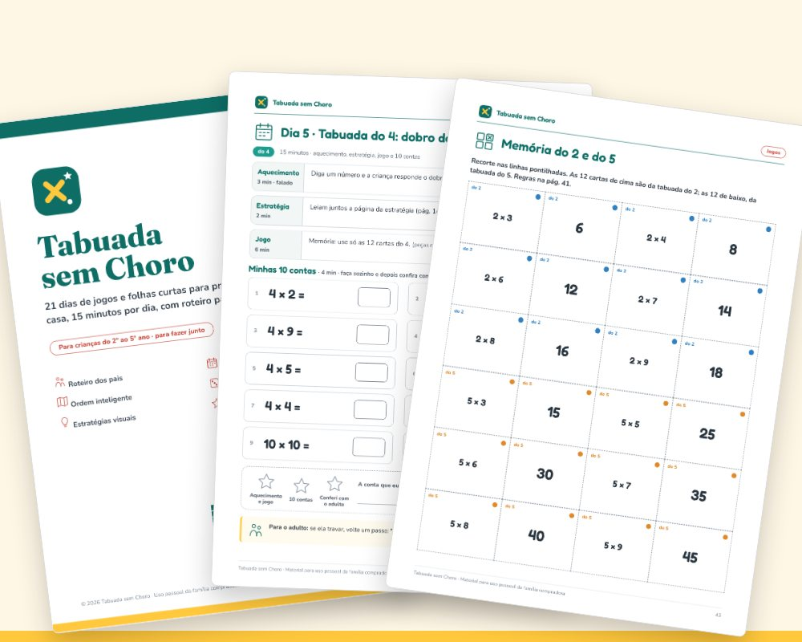
Compra única · garantia de 7 dias · acesso imediato pela Kiwify
Em muitas casas, a hora da tabuada costuma ser assim:
O Tabuada sem Choro organiza a prática para você: cada dia diz o que falar, qual jogo usar e quais 10 contas fazer. São 15 minutos, com começo e fim, e um roteiro para quando a criança trava.
O que é
A tabuada vem numa ordem inteligente: começamos pelo 2, 5 e 10, usamos o 2 para chegar no 4, o 3 para chegar no 6, o 10 para chegar no 9. Com o troca-troca (3 × 7 = 7 × 3), a tabela de 100 contas encolhe e, no fim, sobram só 3 contas realmente novas: 7 × 7, 7 × 8 e 8 × 8.
Cada dia tem aquecimento falado, uma estratégia visual, um jogo e uma folha curta com 10 contas. No fim, a divisão como conta ao contrário, a "Minha tabela" para completar e um certificado que celebra a constância. Todas as contas e gabaritos foram gerados e conferidos.
Por dentro
Imagens reais das páginas que você recebe. Impressão econômica: fundo branco e pouca tinta.
Aquecimento falado, estratégia, jogo do dia e 10 contas curtas, com estrelas para pintar e uma dica para o adulto no rodapé.
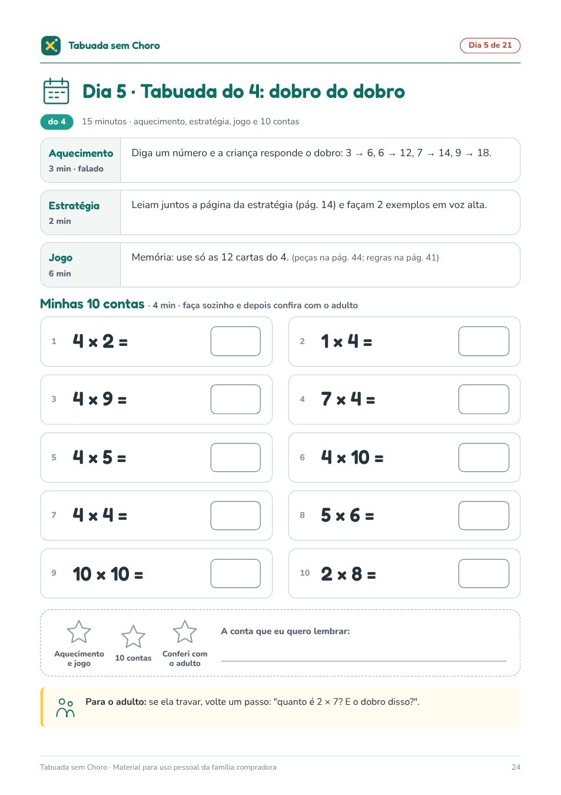
A criança vê, desenhado, que de 100 contas sobram poucas para decorar. Isso tira o peso do "é coisa demais".
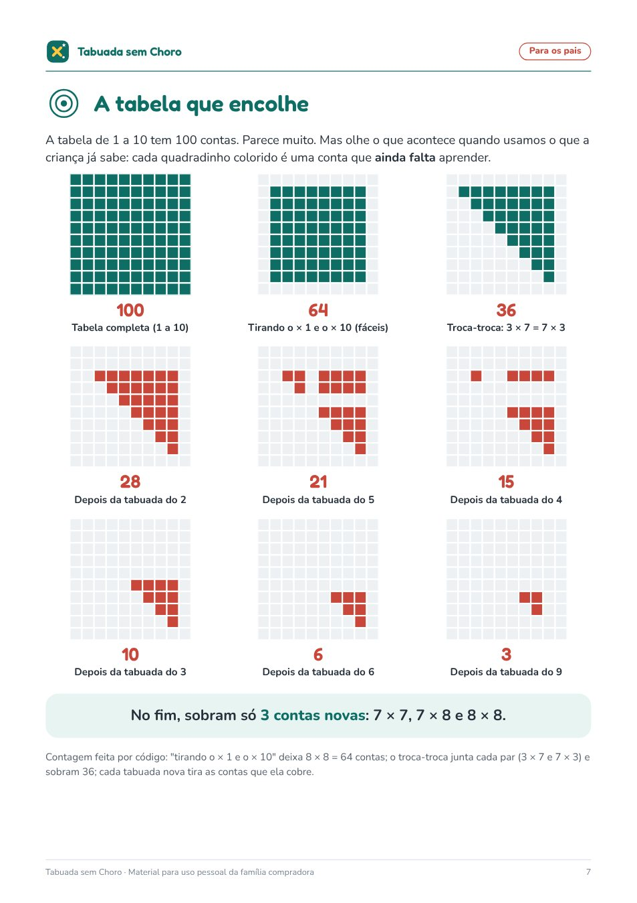
Dobro, dobro do dobro, 10 menos 1, o truque das mãos do 9, a família de fatos da divisão. Um jeito de pensar para cada tabuada.
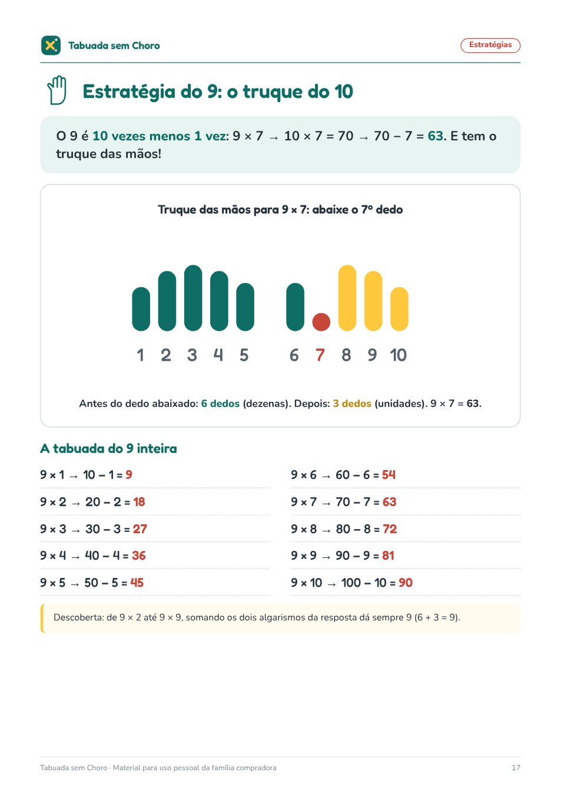
Memória (4 jogos), dominó (3), batalha das cartas (36 cartas), bingo (8 cartelas e fichas) e trilha (2 tabuleiros, peões e dado de papel).
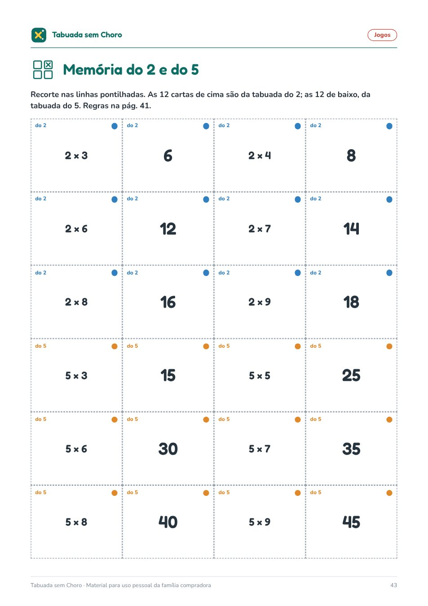
O que falar, o que evitar e um passo a passo para quando a hora da tabuada vira choro. Sem bronca e sem cronômetro.
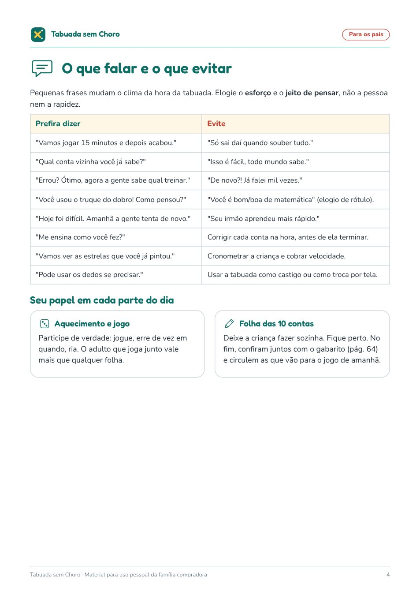
Tabela de progresso com estrelas para os 21 dias, "Minha tabela" para completar no fim e certificado de constância.
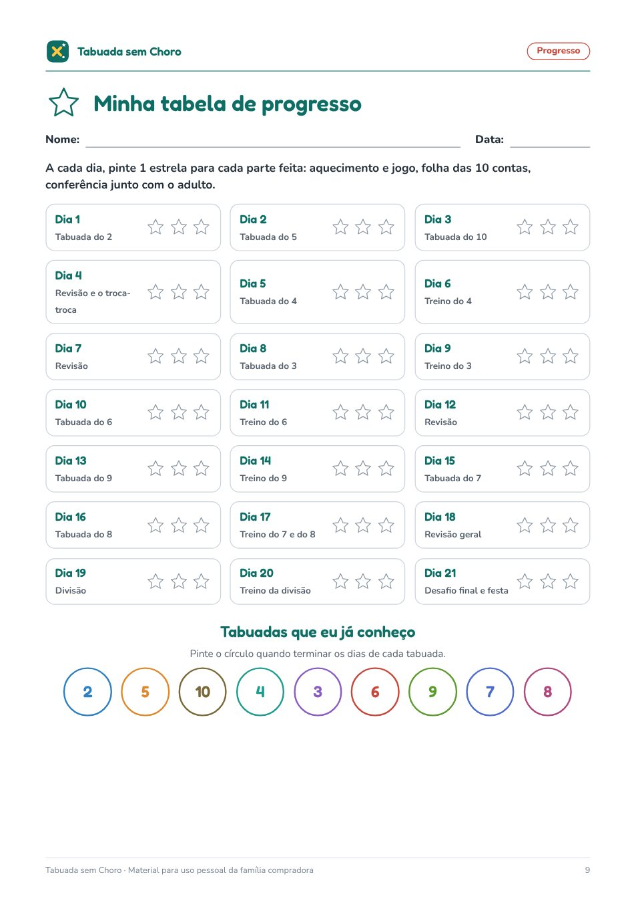
O que vem
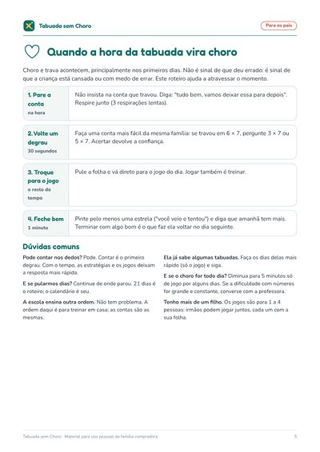
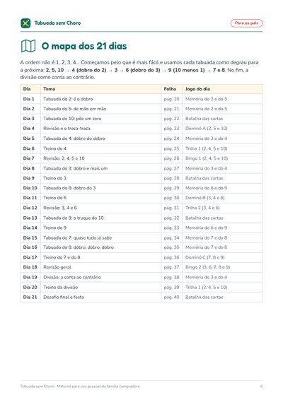
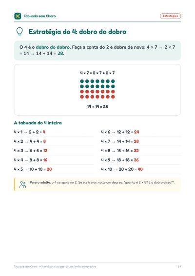
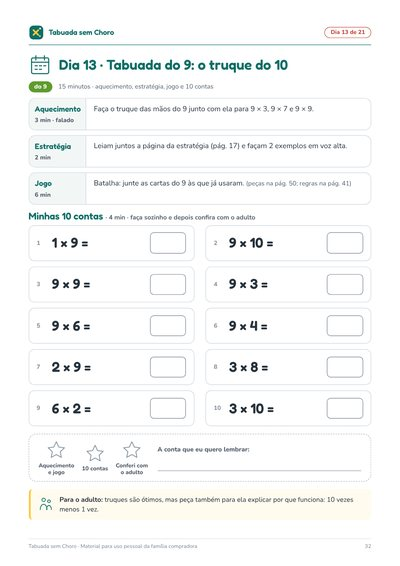
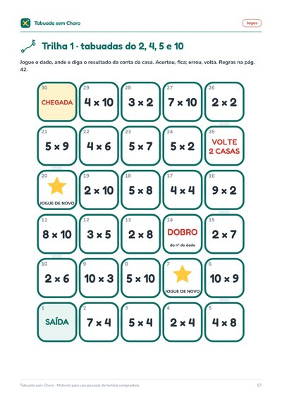
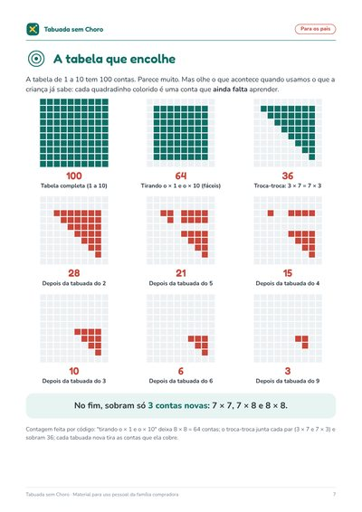
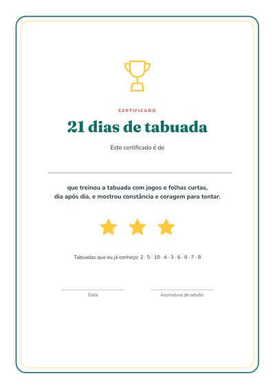
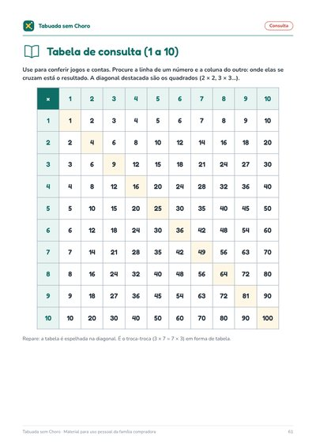
Opcional na hora do pagamento
100 cartas da tabuada para imprimir frente e verso (80 de multiplicação e 20 de divisão), com a resposta e uma dica do jeito de pensar no verso, para a criança conferir sozinha. Mais 6 jeitos de jogar, 10 desafios de lógica com números (com gabarito) e um placar da família.
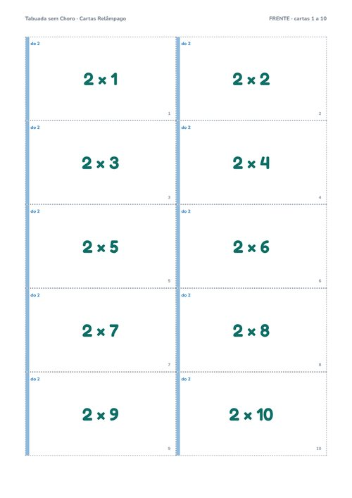
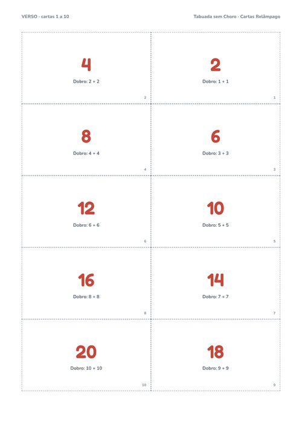
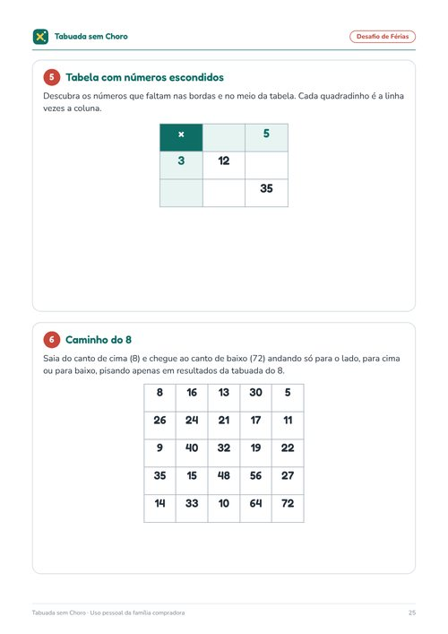
Não é obrigatório: o produto principal funciona sem ele. Aparece como opção na página de pagamento.
Tabuada sem Choro
compra única, não é assinatura
PDF de 66 páginas: roteiro dos pais, 21 folhas do dia, 10 estratégias, 5 jogos para recortar, progresso e certificado
Quero o Tabuada sem ChoroPagamento e entrega pela Kiwify. Os arquivos ficam na área de membros para baixar.
Para crianças do 2º ao 5º ano (mais ou menos de 7 a 10 anos) que estão aprendendo ou revisando a tabuada do 2 ao 10. As folhas são feitas com um adulto junto.
Sim. Cada dia diz o que falar, qual jogo usar e quais contas fazer, e todas as respostas estão no gabarito e na tabela de consulta. As 3 páginas para os pais explicam tudo em 10 minutos.
Não prometemos prazo. O material organiza 21 dias de prática curta e leve; cada criança tem seu ritmo. Se pularem dias, é só continuar de onde pararam.
Não. Imprima a folha do dia e as peças dos jogos da semana (há uma lista do que imprimir). Tudo funciona em preto e branco, com fundo branco e pouca tinta.
Nos dois. Nas férias, ajuda a não perder o que foi aprendido; durante o ano, complementa a escola com prática em casa.
Não. A ordem do material é para facilitar o treino em casa; as contas são as mesmas.
Sim. Você pode imprimir quantas cópias precisar para as crianças da sua casa, e os jogos são para 1 a 4 pessoas.
Depois da confirmação do pagamento, a Kiwify envia por e-mail o acesso à área de membros. Lá estão os arquivos para baixar.
A licença é de uso pessoal (você imprime quantas cópias precisar para as crianças da sua casa). Não é permitido revender nem repassar os arquivos.
Você tem 7 dias de garantia. Peça o reembolso pela Kiwify.
Escreva para joaovictor+P011@rglogistica.com.br.